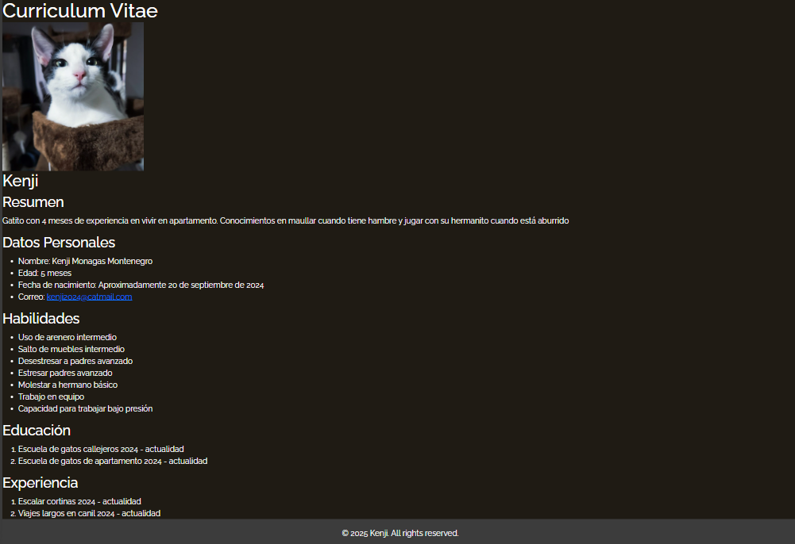
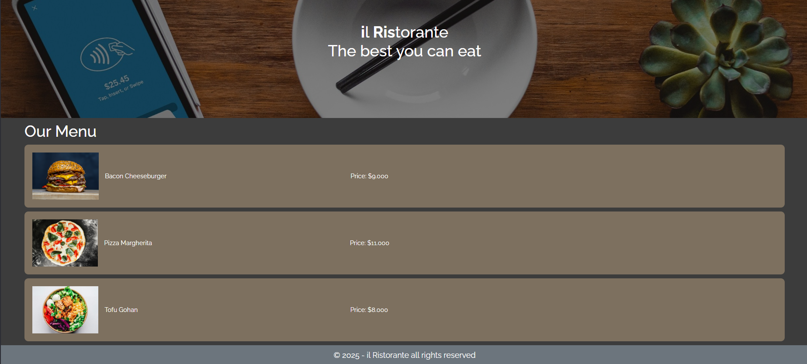
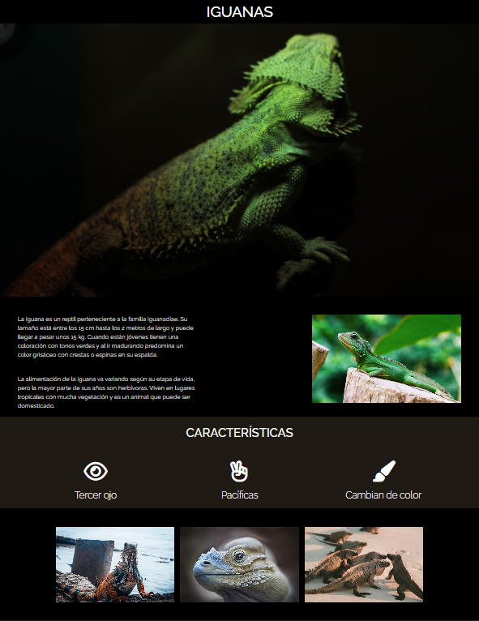
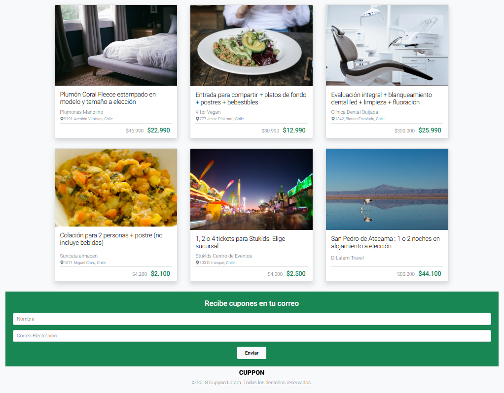

Resumen
Portafolio
Primer Landing
Iguana Page
Cuppon
Portafolio
Tabla de proyectos
Proyecto
Imagen
Estado
Curriculum de Kenji

En proceso
Primer landing page

Terminado
Página de iguanas

Terminado
Proyecto de sitio Cuppon

Terminado